シェープファイルインポート
Import-Shapefile
概要
シェープファイルインポートアプリは、ESRI Shapefileから2Dオブジェクトを描画できます。必要に応じて、このデータをワークシートに保存することもできます。これらの2Dオブジェクトには、以下が含まれます。
- ポイント（通常はサイトの場所を表す）
- 線（通常は川、道路、公共施設を表す）
- ポリゴン（通常は地理的および政治的境界を表す）
点は通常の散布図として生成され、線の形や多角形はグラフオブジェクトとしてレンダリングされます。データのインポート中に部分修正オプションがオンになっていれば、各シェイプの線と塗りつぶしのプロパティを選択して修正できます。特徴量が多すぎる場合は、処理が遅くなる可能性があるため、マシンの性能に応じて部分修正オプションをオフにすることを推奨します。
チュートリアル
インポートするシェープファイルは以下より取得します。
- アプリパネルからシェープファイルインポートアイコン
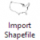
を右クリックし、サンプルフォルダを開くを選択してアプリのサンプルフォルダを開きます。
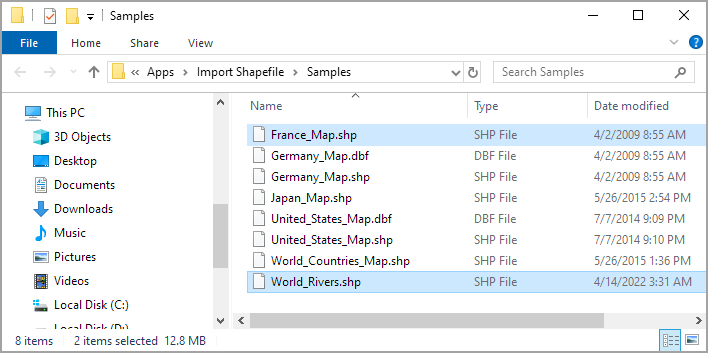
サンプル1
- アプリパネルからシェープファイルインポートアイコンをクリックし、サンプルフォルダでWorld_Countries_Map.shpファイルを選択して、開くをクリックしてAPPS:impshpダイアログを開きます。
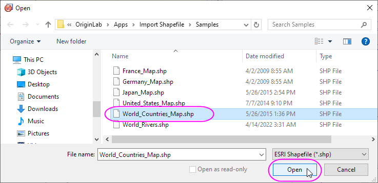
- アプリケーションダイアログで、線の色をグレーに設定し、データポイント出力オプションにチェックを付けます。
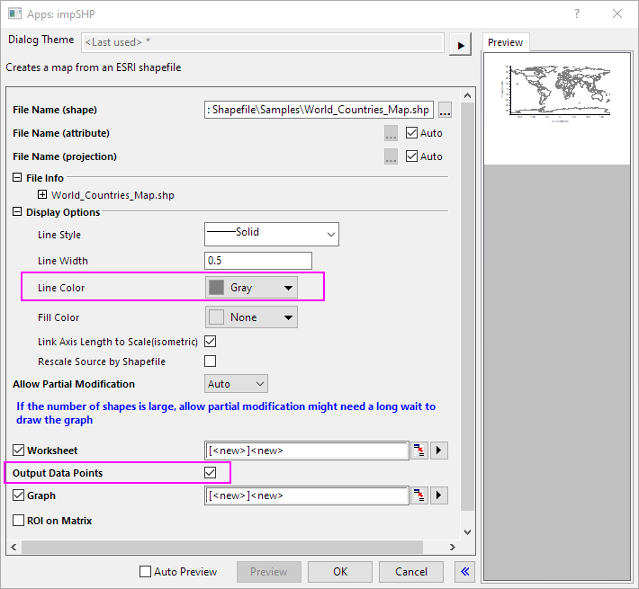
- OKボタンをクリックして、世界のマップグラフを作成します。Shapefileデータセットがワークシートにインポートされます。
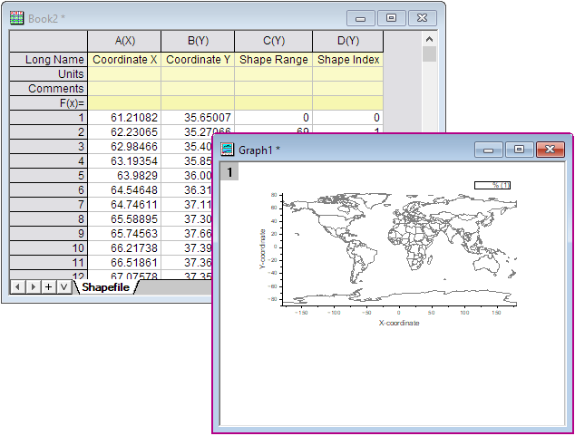
- グラフウィンドウをアクティブにし、空白部分を右クリックしてレイヤにページサイズを合わせるを選択します。ダイアログで、余白の制御を境界にし、境界幅を8にします。OKボタンをクリックします。
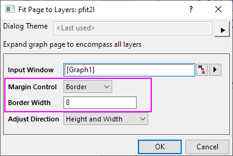
- グラフウィンドウをアクティブにし、シェープファイルインポートアイコンを再度クリックして、サンプルフォルダ内のUnited_States_Map.shpファイルを選択し、開くをクリックしてダイアログを開きます。
- アプリダイアログで、線の幅を 0に設定し、塗り色をオリーブに設定します。グラフが[Graph1] 1（アクティブグラフ）であることを確認します。OKボタンをクリックします。
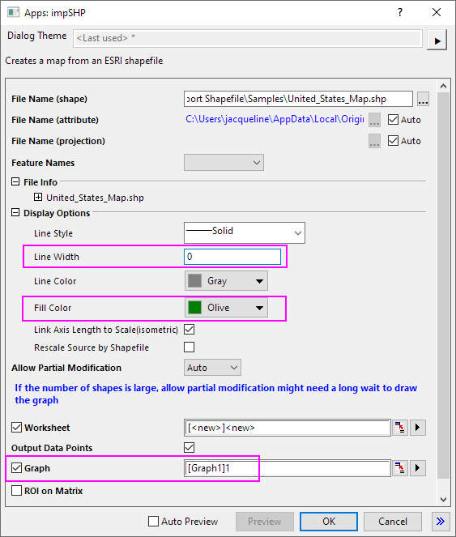
- アメリカ合衆国の地図がワールドマップに追加され、領域が塗りつぶされます。また、シェープファイルデータセットが新しいワークシートにインポートされます。
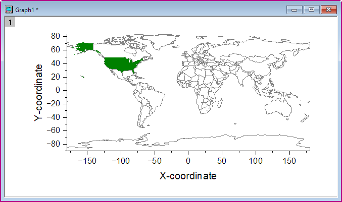
- グラフウィンドウをアクティブにし、シェープファイルインポートアイコンを再度クリックして、サンプルフォルダ内のWorld_Rivers.shpファイルを選択し、開くをクリックしてダイアログを開きます。
- アプリダイアログで、線の幅を 1に設定し、線の色を#86ABE8に設定します。部分修正を許可でいいえを選択します。グラフが[Graph1] 1（アクティブグラフ）であることを確認します。 OKボタンをクリックします。
| Note:グラフ内の線の形状とポリゴンはグラフオブジェクトとしてレンダリングされます。このデータをインポートする際に部分修正を許可オプションがオンになっていれば、各シェイプの線と塗りつぶしのプロパティを選択して変更することができます（サンプル2のステップ8を参照）。特徴量が多すぎる場合は、処理が遅くなる可能性があリます。そのため、ここでは部分修正オプションをオフにすることを推奨します。
|
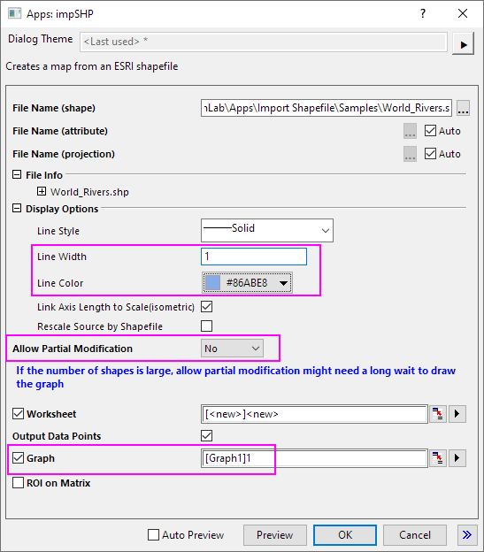
- 川の線が世界地図に追加されます。
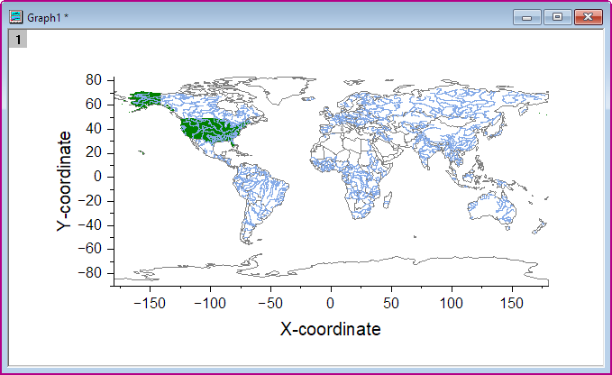
サンプル2
- アプリパネルからシェープファイルインポートアイコンをクリックし、サンプルフォルダでGermany_Map.shpファイルを選択して、開くをクリックしてダイアログを開きます。
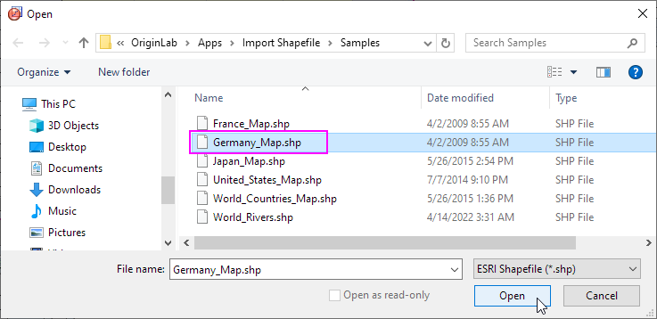
- ダイアログの右上にある矢印ボタンをクリックし、システムデフォルトを選択します。すると、ダイアログはデフォルト設定に戻ります。
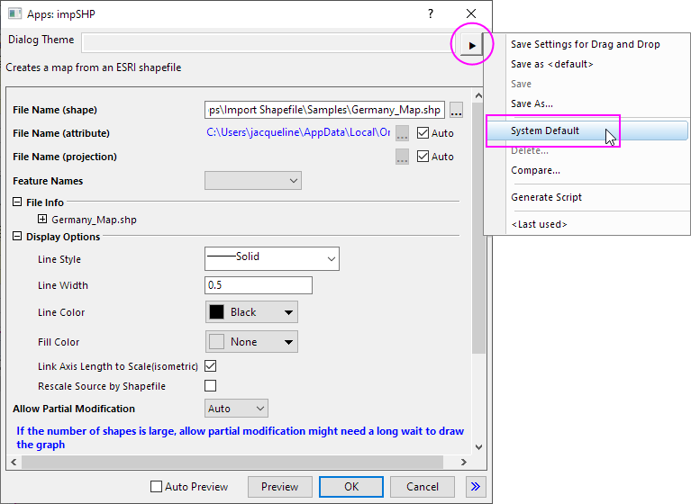
- 線の色を青に設定します。グラフが新規グラフである[<new>]<new>になっていることを確認します。OKボタンをクリックします。
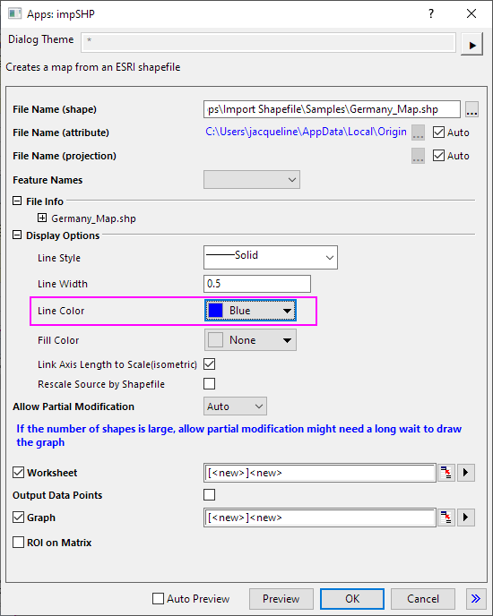
- ドイツの地図が作成されます。
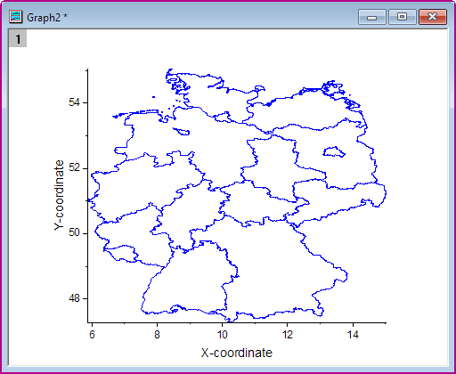
- ドイツの地図でグラフウィンドウをアクティブにし、シェープファイルインポートアイコンを再度クリックして、アプリのサンプルフォルダでFrance_Map.shpファイルを選択して、開くをクリックしてダイアログを開きます。
- 線の色ををオリーブに設定します。 シェープファイルによりソースを再スケールにチェックを付けます。 グラフが[Graph2]1（アクティブグラフ）であることを確認します。OKボタンをクリックします。
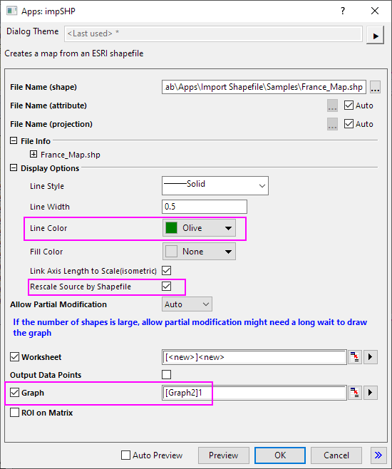
- フランスの地図がドイツの地図の隣のグラフに追加されます。グラフは自動で再スケールされます。
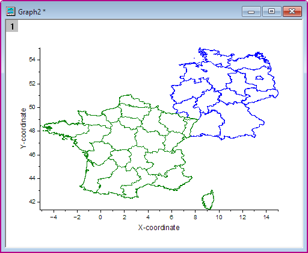
- シェープファイルのインポート時に部分修正を許可が使用可能な場合、インポート後にオブジェクトマネージャで選択したポリゴンのフォーマットを編集可能です。
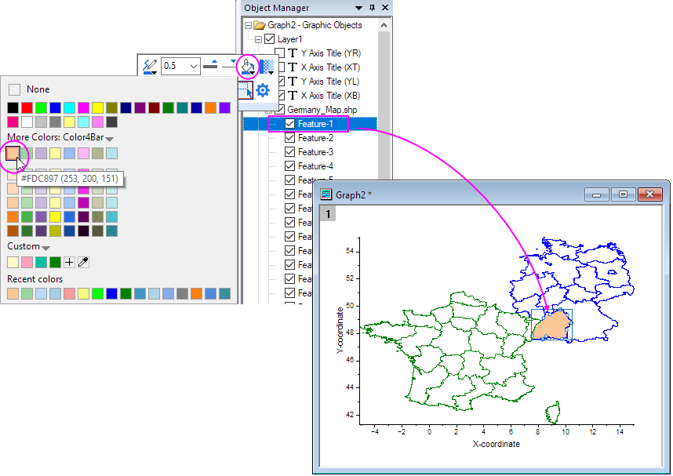
ダイアログ設定
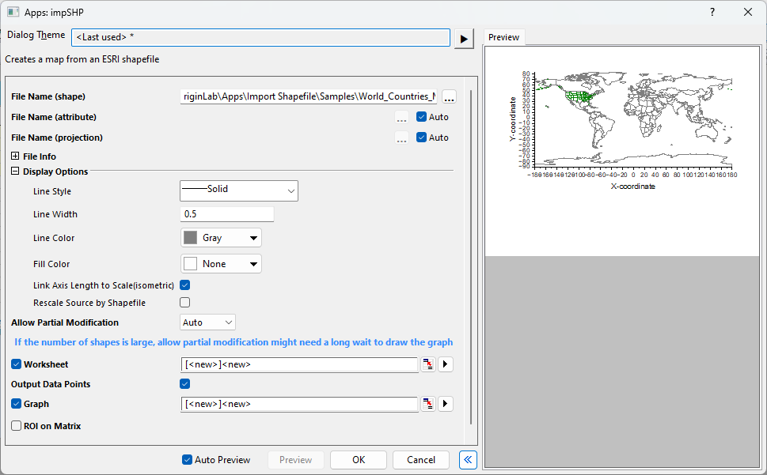
| ファイル名 (shape)
|
すべての特徴量のジオメトリが含まれるファイルの名前。
|
| ファイル名 (attribute)
|
特徴量の属性を保存するファイルの名前。
|
| ファイル名 (projection)
|
投影形式の情報が含まれるファイルの名前。
|
| 特徴量の名前
|
インポートする特徴量の属性。ファイル名 (attribute)が指定されている場合に使用可能。
|
| ファイル情報
|
シェープファイルのファイル情報。
|
| 表示オプション
|
線または多角形の線のスタイル。
線または多角形の線の太さ。
線または多角形の線の色。
多角形の塗りつぶし色。
Shapefileレイヤに対して、リンク軸の長さをX:Y比=1でスケールするように指定。このオプションはデフォルトで選択されます。
- シェープファイルによりソースを再スケール
- シャープファイルをアクティブなグラフウィンドウにインポートする際このオプションにチェックを付けると、グラフ軸はシェープファイルに応じて再スケールされます。チェックを外すと、アクティブグラフの軸スケールは変更されません。
- シャープファイルを新しいグラフウィンドウにインポートする場合、このオプションは新しいグラフの軸スケールに影響しません。
|
| 部分修正を許可
|
インポートするシェープファイルポリゴンを複数オブジェクトまたは単一オブジェクトとして指定します。インポート後、オブジェクトマネージャウィンドウで結果を確認できます。次の3つのオプションを利用出来ます。
- 自動 : Originがシェープファイルポリゴンの数をチェックします。シェープファイルのポリゴン数が@shpdl（@shpdlはシステム変数で、デフォルトでは30K ）より大きいと、単一オブジェクトとしてインポートされます。
- はい : シェープファイルポリゴンを単一のオブジェクトとしてインポートします。
- いいえ : シェープファイルポリゴンを複数のオブジェクトとしてインポートします。
|
| ワークシート
|
生データをワークシートに保存します。
|
| データポイントを出力
|
グラフデータポイントをワークブックに出力します。
|
| グラフ
|
マップを作成するグラフ。
|
| 行列のROI
|
シェープファイルを行列ウィンドウにROIとしてインポートします。
|